Expression evidence and barcode links
Cells reads sparse expression evidence in place, preserves its sources and checks which barcodes match the selected receptor sample.
Open a matrix
Available in 0.6.0. Start with the complete artificial single-cell study to connect source inspection, maps, clonotypes, graph tests and AnnData export.
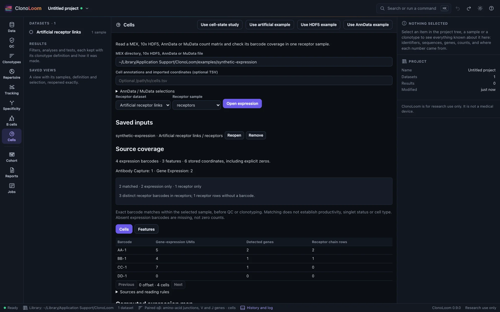
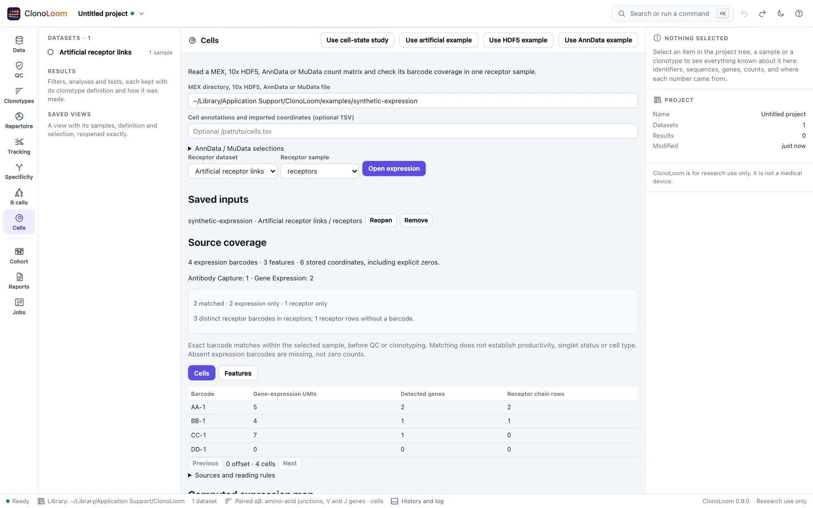
Open the receptor data in Data, then choose Cells. Enter the directory containing matrix.mtx, features.tsv and barcodes.tsv, optionally gzipped. Legacy two-column genes.tsv is also accepted. Select a receptor dataset and explicitly choose its sample, then press Open expression. Choose Expression only to inspect the matrix without a receptor binding.
For HDF5, enter the complete path to a 10x feature-barcode file such as filtered_feature_bc_matrix.h5 in MEX directory, 10x HDF5, AnnData or MuData file. The same sample binding, optional annotations, coverage and saved reopening apply. Select the actual matrix file or directory: ClonoLoom does not choose between raw and filtered matrices, unpack archives, or search a whole Cell Ranger output tree. AnnData and MuData use explicit selections described below.
Try the HDF5 example
Press Use HDF5 example to inspect the same four artificial cells as the MEX example, stored in a compressed HDF5 file with shuffle and chunk checksums. The gene-expression totals are 5, 4, 7 and 0; the 11 antibody counts are kept separately. Two expression barcodes match receptor evidence. Sources and reading rules shows the single HDF5 file and its SHA-256.
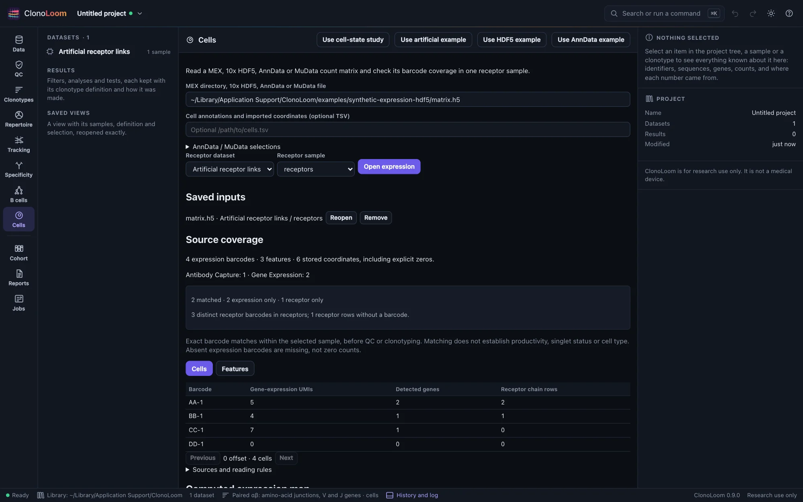
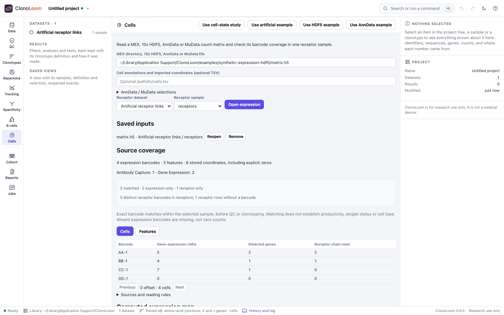
Read AnnData or MuData
Enter a .h5ad or .h5mu file and expand AnnData / MuData selections. Set Count matrix to X or layers/counts (using the actual layer name). MuData also requires the Expression modality, such as gex. No layer or modality is chosen automatically. X often contains normalized data: only nonnegative, finite integer values are accepted, and integral values alone cannot prove that the matrix contains raw counts. AnnData values are labeled counts; UMI semantics are not inferred.
The selected modality's observations and variables remain in source order. Categorical, nullable, text, numeric and boolean annotations retain missing values. Features also shows variable annotations. Feature IDs come from the variable index; use the optional Feature name column and Feature type column to select source columns. Without them, names equal IDs and the selected expression matrix is treated as Gene Expression. Repeated names are allowed; duplicate IDs and barcodes fail. Leave the external TSV field empty for AnnData/MuData.
Choose one Supplied embedding by its obsm key, such as X_umap. It must have two coordinates per selected expression observation. Both NaN means missing; partial or infinite pairs fail. Axes retain the source key, with UMAP 1/2 or t-SNE 1/2 when that key identifies the map. The source path is shown, the axis scales are equal, and coordinates are not computed or changed by ClonoLoom. Other modality/global maps are not combined.
To inspect scirpy chain records, select the AIRR key (usually airr) and, for MuData, the AIRR modality. AIRR evidence shows every selected scalar field and unfiltered chain; AIRR cells retains the complete source population, including empty chain lists and missing records. Exact barcodes link the two selected modalities even when their orders and populations differ. Observation coverage is distinct from productive or paired receptor coverage. Imported clonotype assignments and chain indices are not adopted as ClonoLoom results.
Press Use AnnData example for four artificial cells with a selected count layer, repeated feature names, missing annotations, one missing coordinate pair and three AIRR chains. Its source calls the illustrative coordinates X_umap; these points are not a computed UMAP or a biological model.
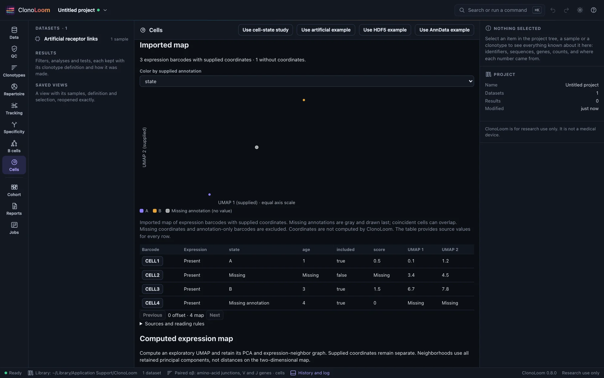
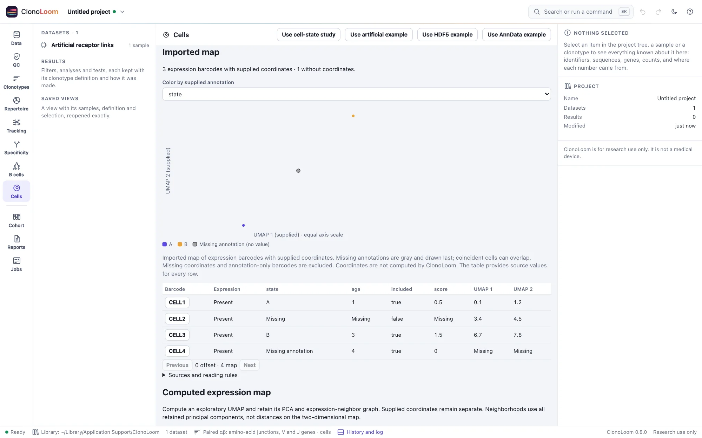
All selections and the file fingerprint survive saved reopening. Changed selections or source bytes require a new input. Dense, CSR and CSC counts are supported within the documented format and resource limits; unsupported HDF5 storage and Awkward forms fail explicitly. These readers follow the AnnData on-disk specification, MuData's modality storage and scirpy's AIRR structure.
Read the coverage
Matched counts exact barcode strings present in both the matrix and the selected receptor sample. Expression only and Receptor only retain the two unmatched populations. Multiple receptor chains count once as a barcode; chain rows remain visible beside each expression barcode. Rows with no receptor barcode are reported separately.
No suffix is stripped and no match crosses samples. These are source counts before QC or clonotyping. Matching does not establish productivity, singlet status or cell type. Absent expression barcodes have missing expression, not zero counts. A barcode present in the matrix can have measured zero counts.
Cells shows gene-expression UMIs and detected genes, excluding antibody and other feature types. A matrix with no Gene Expression features says Not measured. Features preserves IDs, names and types; names may repeat, IDs may not. Pages hold at most 50 entries in the interface. Raw inspection does not normalize counts or infer phenotypes. Computed maps are a separate analysis below.
Add annotations and an imported map
Enter an optional plain or gzipped TSV path in Cell annotations and imported coordinates before opening. The first column must be barcode; other columns are supplied text annotations, with optional map_x and map_y together. For example:
barcode state map_x map_y
AA-1 state A 0 -2
BB-1 state B 1 3Empty fields mean missing. A coordinate pair must be either completely empty or two finite numbers within ±1012. Labels and barcodes are exact, case-sensitive strings. No file is discovered automatically. This table describes one selected expression matrix; it does not join across receptor samples.
Annotations retains every supplied row, including barcodes absent from expression. Coverage reports expression barcodes without annotation rows and without coordinates separately. Empty labels remain missing, even when the row exists. Imported map shows only expression barcodes with supplied coordinates; it never invents coordinates or silently samples the population. Maps above 20,000 such barcodes fail explicitly; the complete annotation table remains available. Select a point or its barcode button in the table to inspect source values. Color by an annotation; missing values use outlined neutral gray and draw last so other categories do not cover them. More than six nonmissing labels use one color; missing values remain gray and exact labels remain in the table. Coincident cells can overlap, and every source row remains inspectable.
The supplied map_x and map_y axes are labeled separately and have the same display scale. The TSV does not supply an embedding method, so these axes are not relabeled UMAP or t-SNE. Coordinates are supplied evidence, not a computed UMAP, measured physical distance or proof of cell type or antigen specificity. Computed expression maps and clonotype phenotype overlays are available separately below.
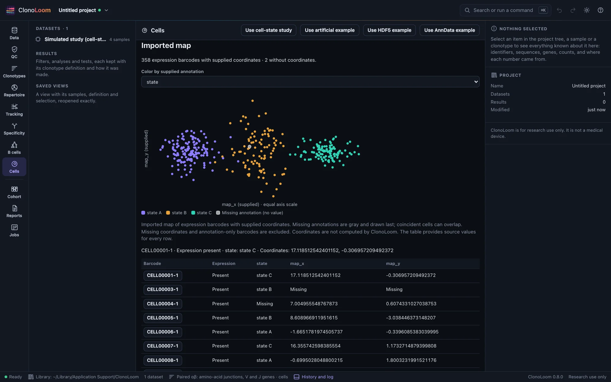
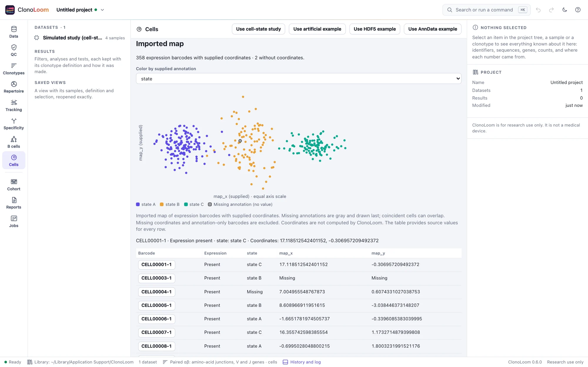
Try the paired cell-state study
Press Use cell-state study, or open its example and follow the guided step. Two artificial subjects have two samples each: 360 expression barcodes per sample, 24 artificial genes, three known states and paired fictional TRA/TRB receptors. Counts use a seeded negative-binomial model with chosen means and dispersion. Layout coordinates are supplied Gaussian clouds with differing spreads and unequal expected state sizes; this is a software benchmark, not a fitted biological model.
The guided inspection selects S01-1: 359 receptor matches, one expression-only barcode and one receptor-only barcode. Its annotation table has 359 matching rows, one annotation-only row and 358 mapped expression barcodes. Cell 2 lacks annotations, cell 3 lacks coordinates, cell 4 lacks its state label, and the final expression barcode has measured zero counts. The separate truth files retain the generating states.
For another sample, select its receptor sample explicitly and enter expression/<sample> and that directory's cells.tsv. Barcodes deliberately repeat across samples. Generate the same study from the command line with clonoloom simulate --preset cell-states-clouds --out my-study. The generated README and truth manifest record the model and sources.
The original cell-states grid preset and its 120-cell example remain available, with their original source bytes and saved reopening behavior. The new cloud study has a separate directory. Neither example is a computed embedding. Clonotype size overlays, chain-status coloring and linked selection are available below.
Try the artificial example
Press Use artificial example, or open Artificial expression and receptor links in Example data and follow its step. Four expression barcodes match two of three distinct receptor barcodes. AA-1 has two chain rows; BB-1 is nonproductive but still matches raw evidence. EE-1 is absent from expression and one receptor row has no barcode. Gene-expression UMIs are 5, 4, 7 and 0; AA-1 also has 11 antibody UMIs. The two gene names deliberately repeat. These are synthetic bookkeeping cases, not a biological expression model.
Save and reopen
Each input records the three MEX sources or one HDF5 source, plus an optional annotation source: paths, sizes, SHA-256 hashes, reader version and receptor dataset/sample binding. Saved inputs → Reopen reads the files again and refuses changed contents, including annotations and coordinates. Move the files by entering their new paths with the same binding; identical bytes retain the same input identity. Different encodings of the same counts have different source identities. MEX-only identities remain unchanged when unrelated annotation files appear beside them. Remove an input through the undoable Remove button. Sources remain in place and are never modified or copied into the project.
One matrix is retained in memory at a time. Reopen a saved input to switch matrices. Source coverage is an inspection, not a saved scientific analysis artifact. Older projects remain readable.
Reading rules and limits
The reader accepts Matrix Market coordinate/integer/general counts with feature rows and barcode columns. Coordinates are one-based; counts are nonnegative. It rejects duplicate coordinates, duplicate feature IDs or barcodes, incomplete or ambiguous companion sets, malformed gzip and inconsistent dimensions. Explicit zeros are retained. A count or per-cell gene-expression total may not exceed 253−1.
Limits are 200,000 features, 2,000,000 barcodes and 10,000,000 stored coordinates; 64 MiB of labels per companion, 1 MiB per line, 512 MiB decompressed text per file and 1 GiB per source file. Larger or unsupported inputs fail with an explanation. The sparse reader never allocates a dense expression matrix.
HDF5 requires the 10x /matrix schema, integer CSC counts and fixed-length feature/barcode strings. The supported subset includes classic or compact groups, contiguous/compact arrays and classic B-tree chunks with deflate, shuffle and Fletcher32 checksums. Each decoded array is limited to 128 MiB, total decoded arrays to 512 MiB, and metadata to 64 MiB. Variable-length strings, dense groups, newer chunk indices, unknown filters, external links/storage and incomplete chunk coverage fail explicitly; use the corresponding MEX files instead. Older genome-group files, molecule-info files, AnnData and MuData are not accepted as feature-barcode matrices.
Annotation limits are 32 text columns plus barcode and two map columns, 2,000,000 rows, 4,000,000 annotation values and 64 MiB of text, with the same line and source limits. Duplicate headers or barcodes, uneven rows, invalid UTF-8 and partial/nonfinite coordinates are rejected. Quoted or multiline TSV fields are unsupported; empty fields are the only missing-value notation.
Format references: 10x Genomics MEX documentation and NIST Matrix Market (Boisvert et al., 1996, NISTIR 5935). Duplicate rejection, exact sample-scoped linkage and numeric limits are ClonoLoom policies. Independent SciPy parsing checks every value of the artificial matrix; set-based tallies check coverage.
The HDF5 reader follows 10x's HDF5 schema and the HDF Group file format specification. Independently generated h5py files and SciPy reconstructions check supported encodings, every count and gene total. The documented subset and resource limits are ClonoLoom policies, not claims of full HDF5 compatibility.
Compute a map from expression counts
Open the cell-state study, then select Compute expression map. ClonoLoom normalizes gene counts, applies natural log1p, selects features by variance, computes centered PCA and exact Euclidean neighbors, and fits a seeded UMAP. Supplied coordinates and annotation labels never enter this fit. Cells without imported coordinates can still be mapped.
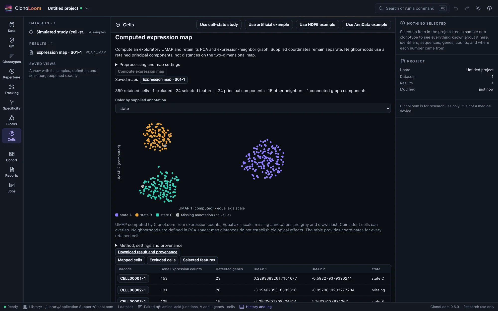
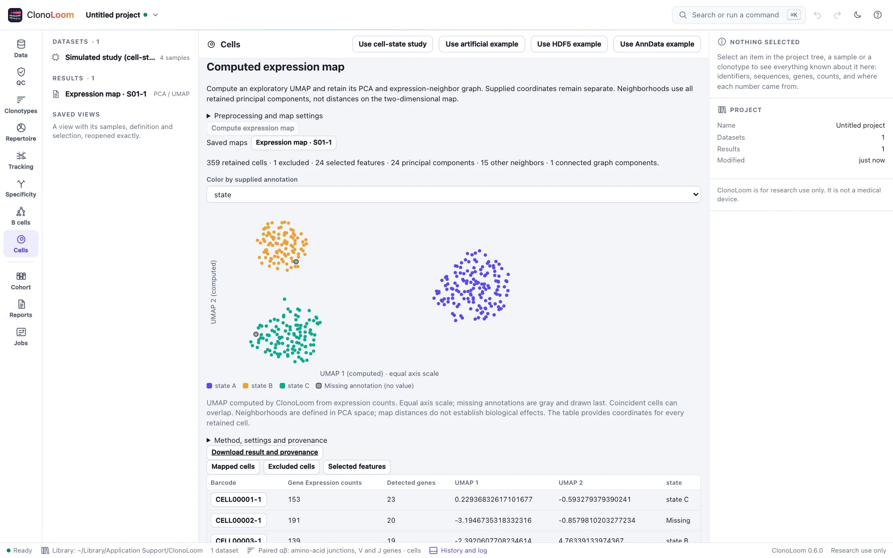
Expand Preprocessing and map settings to choose cell/gene thresholds, feature and component counts, neighborhood size, normalization target, seed and UMAP settings. The defaults use 500 variance-ranked features, up to 30 PCs and 15 other neighbors. This variance ranking is not a named highly-variable-gene recipe. No batch correction or receptor QC is applied. All expression cells passing the stated thresholds are eligible.
The result preserves exact barcodes, exclusions, selected features and loadings, PCA scores, directed neighbors, fuzzy graph weights, computed coordinates and source fingerprints. Read Method, settings and provenance, inspect the paged tables, or download the complete JSON. Jobs can be cancelled in Cells or Tasks. Saved maps reopen from Results without their source files.
Maps have equal axis scaling and report disconnected graph components. Neighborhoods are defined in PCA space; apparent separation on UMAP is not a biological effect size. Clonotype overlays and phenotype summaries can use this saved map as their parent. The implementation follows Scanpy's normalization framework, PCA and UMAP, with explicit ClonoLoom feature-ranking and initialization policies. See the complete methods and bounds.
Clonotypes and phenotypes
Open expression evidence with an explicit receptor dataset and sample. Under Clonotypes and phenotypes, choose imported coordinates or a saved computed map, a supplied annotation and a size population, then Compute clonotype phenotypes. The active definition and QC rules are pinned in the result. Settings configure the next computation; historical results keep their own choices.
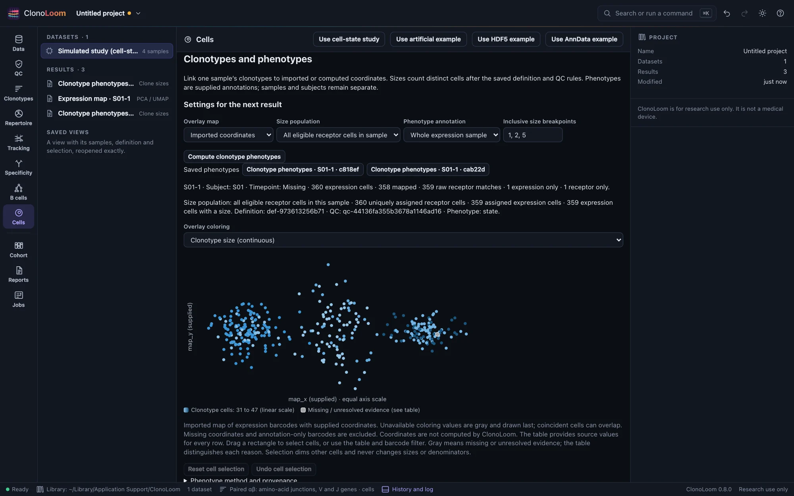
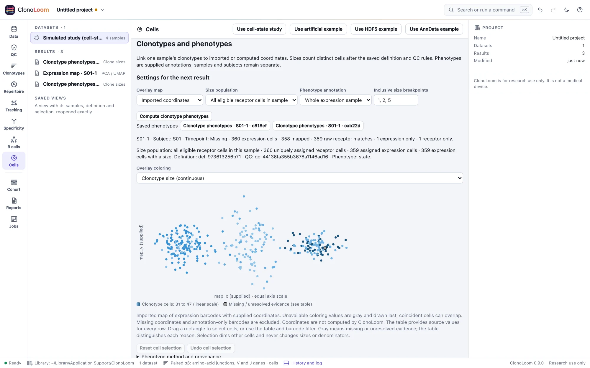
All eligible receptor cells in sample includes uniquely assigned receptor cells without expression or coordinates. Mapped eligible cells only counts uniquely assigned cells with coordinates in the selected map. Clone coverage reports both, plus expression coverage. Size categories default to 1, 2, 3–5 and greater than 5 cells; inclusive breakpoints are configurable. Duplicate contigs never inflate cell counts.
Missing receptor evidence, QC exclusion, unassigned clones, ambiguous assignments and absence from the chosen size population have no numeric size. Multiple locus-specific memberships and conflicting vendor IDs remain ambiguous. Productive chain evidence follows QC's receptor arms and more-than-two-contigs-per-locus rule; mixed families and unresolved loci are explicit. These labels do not diagnose cell types or doublets.
Phenotype summaries use all expression cells, including missing labels and cells without coordinates. Expanded shares divide cells with size greater than one by cells with an available size. Within-clone fractions divide by all expression cells assigned to that clone; within-group fractions divide by all expression cells with that annotation. Integer denominators and mapped coverage are shown. Each result records one sample, subject and timepoint. Samples are not pooled, cells are not biological replicates, and no enrichment or antigen-specificity inference is made.
Select a clone in Clone coverage or press Show on a cell map in the Clonotypes inspector. Matching saved definition/QC rules are required. Click or brush map cells to inspect their clones and unresolved evidence; the searchable table and Select matching cells provide a keyboard alternative. Reset and undo highlighting without changing counts. Color by continuous size, category, chain/assignment evidence, supplied annotations or sample metadata. Missing values stay gray; axes preserve their source and equal scale.
Saved results reopen without sources and export their complete JSON record. Jobs can be cancelled or resumed; expression fingerprints and computed-map checksums are verified. Limits are 100000 expression cells and 20000 mapped cells, with no subsampling. The independent SQL reference checks both size populations, every category, phenotype count and fraction. See the complete phenotype methods and workflow.
References: Sturm et al., Scirpy (2020), the scirpy clonal-expansion API, and 10x's integrated V(D)J tutorial. Counting, ambiguity and denominator policies are ClonoLoom choices.
Clonotype modularity
Compute an expression map and a phenotype overlay using that map. Under Clonotype modularity, choose the saved phenotype parent and compute. The cloud-study guide includes this workflow. One sample's uniquely assigned retained cells form the induced graph population, including isolated vertices; unresolved cells are excluded with their reasons retained. Positive fuzzy-union edges count once. UMAP distances and weight magnitudes are not used.
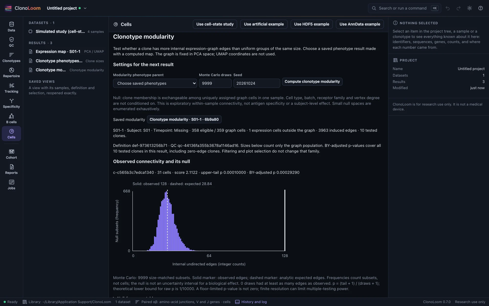
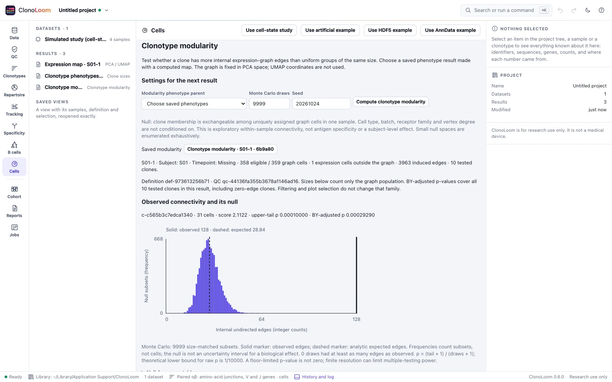
The score is log2((observed + 1)/(expected + 1)), with analytic expected edges M s(s−1)/(N(N−1)). Small null spaces are exhaustively enumerated; larger ones use seeded Monte Carlo subsets with (tail + 1)/(draws + 1) upper-tail p-values. Ties count. Benjamini–Yekutieli adjusts all testable clones, including zero-edge clones. Singletons and clones occupying the entire population are explicitly untested.
The plot has integer edge counts horizontally and subset frequencies vertically, starting at zero. Solid and dashed lines mark observed and expected edges. It is a null distribution, not a biological confidence interval. Inspect its frequency table, raw and adjusted p-values, population sizes and untested reasons. Filtering does not change the tested family. Open the parent overlay to highlight a clone, or export the full record. Completed results reopen without parents or source files.
The null assumes exchangeable clone membership within this sample; it does not condition on cell type, batch, receptor family or degree. Connectivity can reflect those factors. This is exploratory, not evidence of specificity, causality or subject-level effects. Monte Carlo resolution and conservative adjustment can limit power. See the full methods, bounds and validation, the scirpy score definition, Phipson and Smyth, Hemerik and Goeman, and Benjamini and Yekutieli.
Receptor / expression neighborhoods
Choose a computed-map phenotype parent with paired primary αβ amino-acid clonotypes, then compare its receptor and expression neighborhoods. Keep the original receptor dataset open to prepare a new result. Each clonotype contributes one mean expression-PC profile, regardless of cell abundance. Full TCRdist requires an explicit human/mouse choice and the V-loop reference; CDR3-only mode explicitly omits germline loops. The fictional cloud-study guide uses CDR3-only distances and neighborhood sizes 2 and 4.
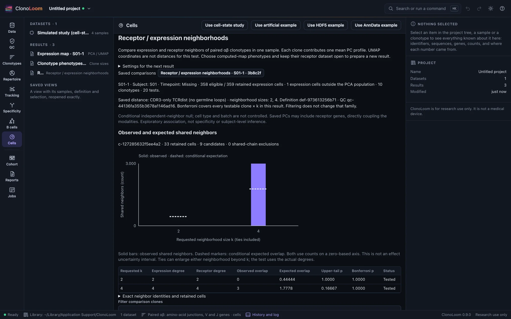
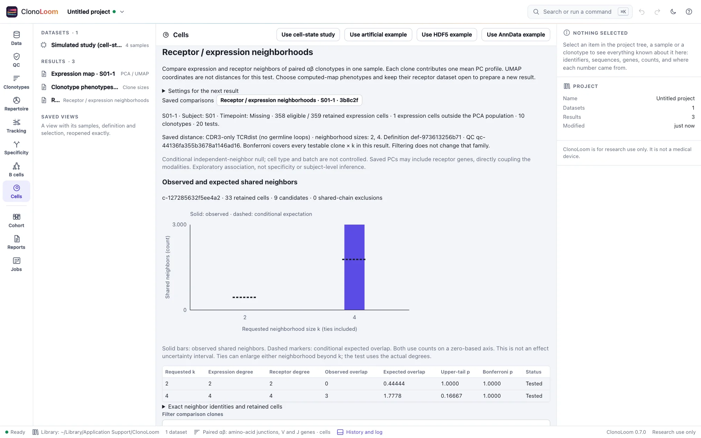
Self and clones sharing an exact α or β CDR3 are excluded from both candidate pools. Exact directed nearest-neighbor sets include every cutoff tie. Expression distances use all saved PCs, never UMAP coordinates. The conditional hypergeometric test uses actual neighbor counts and candidate population; Bonferroni covers every testable clone and requested size, including zero overlaps. Insufficient populations remain explicitly untested. The original multi-graph CoNGA score is not reproduced.
Solid bars show observed overlap and dashed markers show conditional expected counts on a zero-based axis. The table gives raw and adjusted p-values; exact neighbor identities and cell eligibility remain accessible. This is not a confidence interval. Filtering and selecting clones do not change the tested family. Open the parent overlay to inspect a clone, or download the complete saved record. Completed results reopen without sources or parents.
The null assumes independent, exchangeable neighbor labels; cell type, batch and chain groups are not controlled. Saved PCs may contain receptor genes, directly coupling the modalities; inspect the saved feature list. Correction cannot repair a violated null. Results are exploratory within one sample, not specificity, causality or subject-level effects. See the full method, bounds and validation, Schattgen et al., CoNGA, Dash et al., TCRdist, Mayer-Blackwell et al., TCRdist3 and Dunn, simultaneous comparisons.
Export linked cells as AnnData
Under AnnData export, choose saved clonotype phenotypes and press Prepare AnnData export. Keep the original receptor dataset open and the expression sources available for preparation. The saved export can then be reopened and downloaded without those files. Download AnnData and NOTICE includes cells.h5ad, the export record, checksum manifest and provider terms.
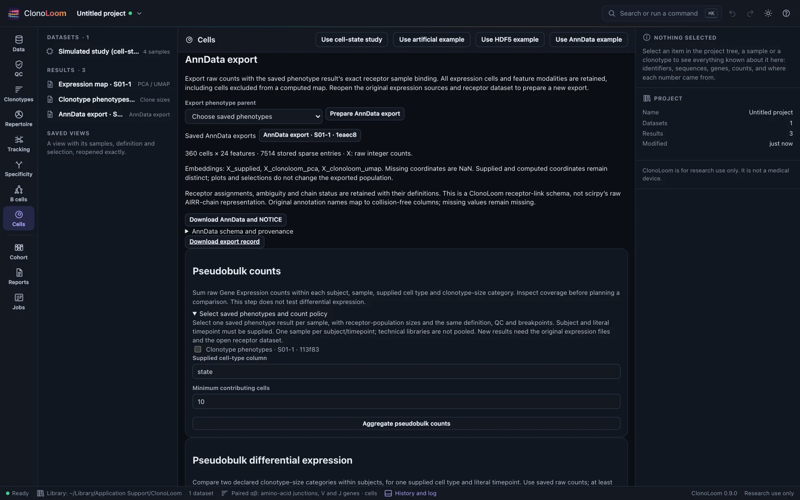
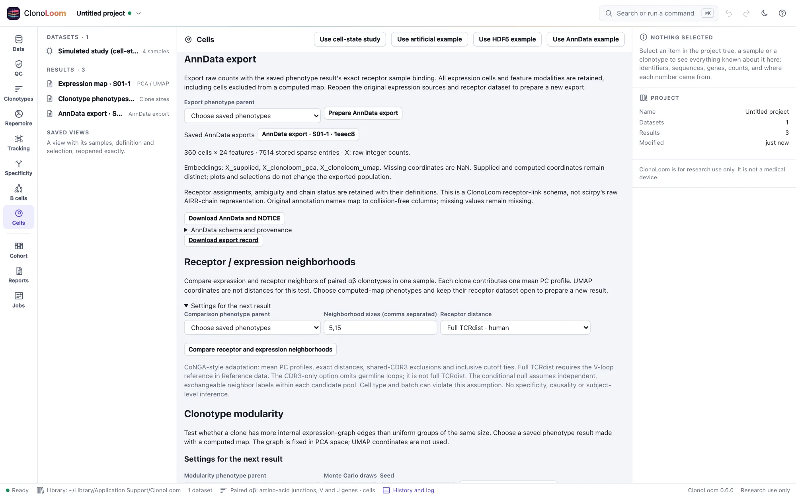
X contains raw integer counts for every input cell and feature modality. Exact barcodes retain their receptor sample binding, saved assignments, chain status and clone sizes. Missing annotations stay missing. Supplied coordinates, saved PCA scores and computed UMAP coordinates have distinct names; unavailable rows are NaN, never zero coordinates. This export preserves the population regardless of the current plot selection.
The complete saved phenotype and map documents, parent manifests, source fingerprints, definition, QC, sample metadata and method citations are in uns/clonoloom. Receptor links use a documented ClonoLoom schema, not scirpy’s raw AIRR-chain representation. The AnnData export guide gives the schema, independent reader validation, limits and a reading example. AnnData’s own reader and writer validate the resulting object.